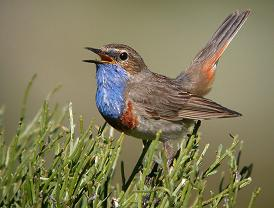
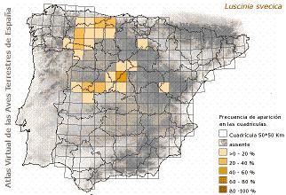

|
| Pechiazul |
Luscinia
svecica |
| Ave
estival |
Orden:
Passeriformes, familia: Turdidae |
 Identificación
Identificación |
| Adulto |
Foto |
Pequeña
ave de unos 13 -14 cm. de la talla del petirrojo,
pero mas esbelto, de facil identificación
por la vistosa mancha azul, que
en primavera con su plumaje nupcial (que
se vuelve pardo fuera de esta época), lucen
los machos adultos en su garganta, con pequeña
"medalla" blanca o sin ella (también
puede ser roja), delimitada inferiormente por
dos bandas estrechas de color negro y castaño.
Las partes superiores y plumas centrales de la
cola son de color pardo oscuro, con la parte basal
de las rectrices externas de color castaño
vivo, terminada en una banda oscura; ceja de color
claro prominente. |
 |
| Dimorfismo
sexual |
| La
hembra tiene la garganta y el babero blancos,
sin azul o con un poco en la parte inferior del
pecho; presentan dos bandas negruzcas a cada lado
del pecho que se fusionan en el centro, pudiendo
tener algo de rojizo por debajo. Después
de su muda postnupcial, el macho tiene el centro
de la garganta blanco aunque mantiene azul en
los lados de la garganta y en el pecho. |
| Descripción
del juvenil |
| Los
ejemplares juveniles se diferencian en tener la
garganta moteada. |
|
|
Distribución |
Dos
son los nucleos principales de Pechiazul en España
donde aparece como reproductora estival
exclusivamente en la peninsula. El primero
se extiende por el Sistema Central, desde las
Sierras de Somosierra, guadarrama, Gredos y Béjar
(en Segovia, Madrid, Ávila, Salamanca y
Cáceres), hasta la Serra da Estrela, ya
en Portugal. El Segundo núcleo se localiza
en las montañas cantábricas en Palencia,
león, Zamora, Asturias y Orense. Un nuevo
y localizado núcleo se ha encontrado en
el puerto de Piqueras en la Rioja. Desde que Whiterby
(1928) la citar por primera vez en el puerto de
Casilla (Ávila), en el extremo oriental
de la sierra de Gredos, han ido aumentando las
localidades donde se cita su reproducción.
Pero aunque puntualmente aparecen citas de ejemplares
sueltos en época de cría en otras
montañas ibéricas, no terminan de
instalarse nuevas poblaciones en otros macizos
montañosos ibéricos. En el Sistema
Central es más abundante en la cara norte,
con menor pendiente, más innivación
y cursos de agua mas remansados, en contraposición
a la ladera sur más pendiente, seca y abrupta. |
 |
Sin
embargo en la cordillera Cantábrica sucede
lo contrario y ocupa casi exclusivamente la verteiente
sur, más soleada y a la vez con temperaturas
y relieve más suave. |
| Variaciones
geográficas |
Salvador
José Peris, catedrático del Área
de Zoología de la Universidad de Salamanca,
es el responsable de la investigación titulada
“Autoecología del pechiazul ibérico,
con especial referencia a la Sierra de Béjar”,
orientada a conocer la distribución de
esta especie migratoria en la Península
Ibérica (tamaño de las poblaciones,
selección del hábitat y fenología
de cría y aspectos taxonómicos).
España es el cuarto país en Europa
con mayor número de estos ejemplares, que
cruzan la Península en migración
o invernan en ella. Hasta la fecha hay doce subespecies
reconocidas del ave en Europa y Asia y la denominada
cyanecula, que se caracteriza por tener un medallón
blanco en el pecho, sería, en principio,
la única nidificante en nuestro país.
No obstante, los primeros resultados de la investigación
apuntan que podría existir una nueva subespecie
de pechiazul exclusiva de España, dividida
en metapoblaciones, que criaría prácticamente
en su totalidad en Castilla y León y zonas
limítrofes.
Concretamente, el trabajo desarrollado por el
grupo de trabajo de la Universidad de Salamanca,
financiado por la Fundación “Memoria
de D. Samuel Solórzano Barruso”,
revela ciertas particularidades en grupos de pechiazules
de las zonas de la Sierra de Béjar, las
montañas de Sanabria y la Sierra de Piedrahita.
Entre estas peculiaridades destacan que sólo
el 46,4% de los individuos tiene la peculiar mancha
blanca que define a la subespecie cyanecula (vinculada
a la edad del individuo y relacionada con la defensa
territorial intra-específica). Este dato
implica una necesaria revisión de todas
las subespecies de pechiazules euro-asiáticas
reconocidas hasta la fecha, debido a que su validez
está basada en este tipo de criterios morfológicos.
Asimismo, presentan una vocalización con
frecuencias más graves que las aves del
centro y norte europeas y la ubicación
de su hábitat se localiza en áreas
de altitud con matorrales altos (de entre 1,5
y 2 m de altura).
En este sentido, para dilucidar aspectos sobre
la posible nueva subespecie se ha procedido al
anillado de ejemplares con ayuda de cepos y reclamos,
que ha demostrado una fidelidad interanual a las
zonas de cría (algunos individuos vuelven
a criar a escasos metros de donde lo hicieran
el año anterior). Los datos aportados por
la investigación señalan que el
ave llega a las zonas de cría en abril
y permanece en ellas hasta agosto. Selecciona
para nidificar, en la Sierra de Béjar y
Piedrahita, aquellas zonas situadas por encima
de los 1.700 m. de altitud, siempre que dispongan
de una buena y densa vegetación constituida
por matorral de piornales y retamas, con pastizales
abiertos y zonas húmedas y que las crías
abandonan el nido a mediados de junio. Sin embargo,
todavía sigue siendo una incógnita
dónde pasan los meses de su invernada comprendidos
entre septiembre y marzo Asimismo, los investigadores
dirigidos por Peris procedieron con la toma de
las correspondientes medidas biométricas
y la extracción de muestras sanguíneas
de los individuos para elaborar un patrón
que permita conocer la identidad de los pechiazules,
compararlas con las otras subespecies euroasiáticas
y determinar las posibles diferencias genéticas
entre ellas y su separación evolutiva.
Las primeras conclusiones señalan que las
aves ibéricas son de mayor tamaño
que las centro-europeas probablemente debido a
su adaptación a la altitud.
|
| Sierra
de Béjar |
Reproducción
segura. Nidifica en los piornales situados a partir
de 1800 m. de altitud, siendo sus mejores zonas
algunos enclaves de La Covatilla y El Travieso.
En la segunda semana de abril llegan las primeras
aves, comenzando los machos a delimitar sus territorios
de cría mediante cantos que se prolongan
hasta finales de junio. Todos los machos observados
carecen de la mancha blanca característica
de la subespecie L.s.
Cyanecula. Una vez concluida la reproducción
abandonan la sierra de Béjar, dispersandose
hacia zonas más cálidas |
|
|
Habitat |
En
la mayoría de se su área de distribución
ocupa formaciones de matorral montano, predominantemente
piornales y brezales, en laderas por encima del piso
arbolado con una cobertura media de matorral, ni muy
espeso ni muy abierto, con suelo fresco cubierto generalmente
de vegetación herbácea de escaso porte.
Aparece entre los 2.120 m. de altitud en Gredos y los
805 m en León. |
|
Biología |
Se
alimenta de insectos y otros invertebrados pequeños,
consumiendo semillas en otoño. Nidifican en el
suelo junto a la base de un arbusto o entre la vegetación
densa. La puesta varia entre cinco y siete huevos, siendo
estos de color verde azulado con finas motas rojizas. |
Estado de la población y amenazas |
Se
estima una población nacional de 9.000 - 12.800
parejas. Se han citado densidades de 1,7 aves/10 ha.
en Palencia, de 3 aves/10 ha. en Salamanca,
de 0,5-1,3 aves/10 ha. en la sierra de Gredos y hasta
cinco machos/10 ha. en la sierra de Manzaneda en Orense.
En España, sus mayores abundancias se registran
en brezales y piornales, y la media de sus densidades
en estos habitats es de 1,34 aves/10 ha. |
Dado
que su presencia depende, en buena medida, de la cobertura
de matorral en los montes donde aparece, su mayor
amenaza es es la alteración de esas formaciones,
ya sea por quemas para favorecer la aparición
de herbazales o por destrucción para ampliación
de pistas de esquí u otras infraestructuras.
Por otra parta, el progresivo abandono del monte y,
por tanto, la ausencia de ganado vacuno que pasta
estos medios y abre el matorral, provoca una progresiva
densificación del mismo y el abandono de zonas
de cria tradicionales.
|
|
Enlaces |
|
|
|